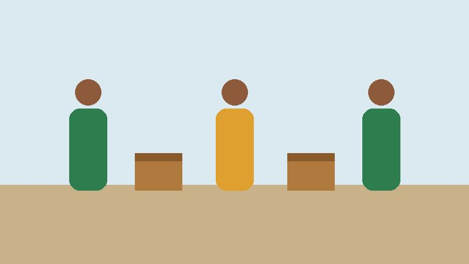
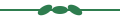

ONG Mãos que Ajudam
Quem Somos

Somos uma organização sem fins lucrativos fundada em 2015 que atua na promoção da educação, da segurança alimentar e da inclusão social de famílias em situação de vulnerabilidade.
Missão, Visão e Valores
Missão
Transformar vidas por meio da solidariedade, oferecendo apoio material e educacional às comunidades atendidas.
Visão
Ser referência regional em projetos sociais transparentes e sustentáveis.
Valores
- Transparência
- Empatia
- Compromisso social
Nosso Impacto

- 1.200 famílias atendidas
- 350 voluntários ativos
- 15 projetos em andamento
Fale Conosco
Endereço: Rua da Esperança, 123 – Centro, São Paulo – SP, CEP 01010-000
Telefone: (11) 3000-0000
WhatsApp: (11) 90000-0000
E-mail: contato@maosqueajudam.org.br
Atendimento de segunda a sexta, das 9h às 18h.